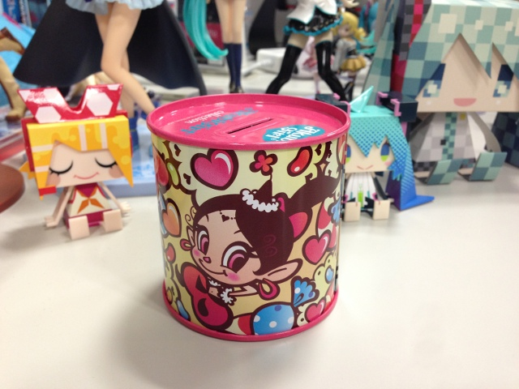
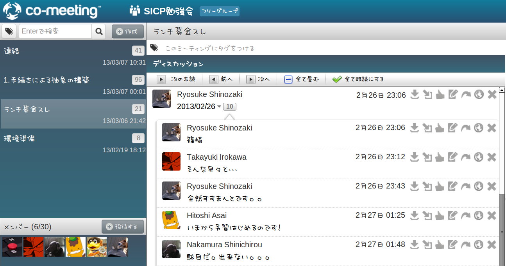

弊社（GMOメディア）でのSICP読書会
ABOUT ME:
浅井です
@hito_asa
注：SICP読書会の主催者ではありません
はじまり
ある日同僚が— 「
SICP読むと年収が上がる
らしいですよ！」
と言ったことから始まりました。
※ 某V GROUPの人から聞いたそうです
形式
週1回
毎週月曜 19:30から約1時間半
主催者による解説
社内のみ、外部には非公開
工夫
問題の回答はgist/githubに上げる
読書会であがった話題や宿題は co-meeting というツールを利用して共有
SICPの運搬がつらいので、予習箇所をコピーしたり自炊したり
経過
2012/08/20 開始（参加者5名）
2012/08/27 第2回（参加者--）
2012/09/03 第3回（参加者++）
2012/09/24 第4回（参加者--） 1.2.1まで
2012/11/26
6週連続中止
継続できなかった理由
4,5人の参加者で最少催行人数3人としていた
体調や家庭の事情で欠席が目立った（仕方ない）
内容をわかっている人がいなくて進行が遅かった
気合が足りない
形式（第2期）
週2回
毎週月曜・水曜 19:30から約1時間半
持ち回りで解説
社内のみ、外部には非公開
参加者は4人（勧誘できず）
特別ルール
必ず当日までに予習をし、問題の回答をgithubにあげておくこと
予習していない場合は
ランチ募金
（※事情による）


経過（第2期）
2013/02/04 再開、最初からやり直す決定
2013/02/18 第2期 第1回 1.1
2013/02/25 第2期 第2回 1.2.1 - 1.2.2
2013/03/06 第2期 第3回 1.2.3 - 1.2.4
反省、今後、課題
気合が必要（主催側は特に）
参加者数の確保（一定の離脱率を見込むべき）
内容わかる人がいるとベター（いないと恐ろしく時間かかる）
予習復習の時間をたっぷりとる
以上です。反省してます。